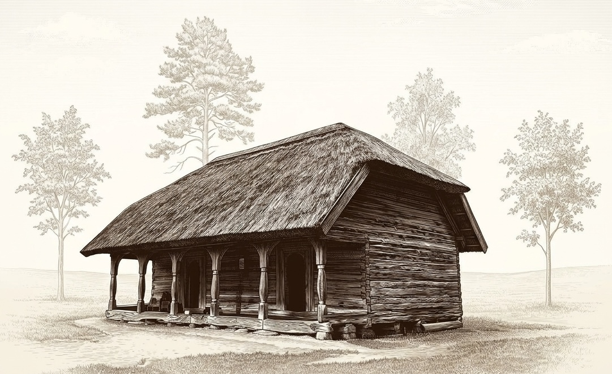

Niedru jumts
123,1 m² · 36,9 m³

- Apmale 11,98 × 8,95 m
- Kore 6,98 m, ievilkta 2,50 m no galiem
- Gala pamats 4,40 m · pacēlums 2,30 m
- Slīpnes 5,03 m un 3,40 m
- Garās plaknes 108,2 m², gali 15,0 m²
- Biezums 30 cm
Pilns aprēķins
- Garums 11,98 m, platums 8,95 m. Lievenis ir dienvidos, bet kore ir pa vidu visai apmalei, tāpēc abām garajām plaknēm ir vienāda projekcija: 8,95 / 2 = 4,475 m.
- Kore no galiem ir ievilkta 2,50 m. Tas ir nolasīts no sarkanās līnijas. Kores garums ir 11,98 − 2 × 2,50 = 6,98 m.
- Gala trijstūris neaizņem visu galu. Tā pamats ir 4,40 m pa vidu galam. Līdz stūrim paliek (8,95 − 4,40) / 2 = 2,28 m, un tie stūri pieder garajai plaknei.
- Pacēlums no griezuma: 6,15 − 3,85 = 2,30 m.
- Garās plaknes slīpne ir √(4,475² + 2,30²) = 5,03 m. Tabulas spāre 5,40 m ir garāka par šo ceļu no apmales līdz korei.
- Gala plaknes slīpne ir √(2,50² + 2,30²) = 3,40 m. Tabulas 2,61 m spāres ir īsākas par šo, tās nav visa gala plakne.
- Gala plakne horizontāli: 4,40 × 2,50 / 2 = 5,50 m². Slīpi: 5,50 × 3,40 / 2,50 = 7,48 m². Divas: 14,96 m².
- Garā plakne horizontāli: 11,98 × 4,475 − 5,50 = 48,11 m². Slīpi: 48,11 × 5,03 / 4,475 = 54,08 m². Divas: 108,16 m².
- Laukums = 108,16 + 14,96 = 123,1 m². Biezums 0,30 m. Tilpums = 123,1 × 0,30 = 36,9 m³. Tas ir seguma kārtas tilpums.